https://m.fmkorea.com/best/10398332944
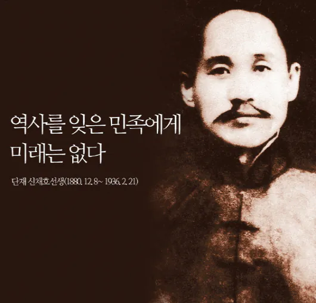
역사를 잊은 민족에게 미래는 없다고 한다
그러나 역사를 잘못 기억하고 있는 민족 역시 너무나 많다.
우리에게 잘못 알려져있는 역사들에 대해 알아보자.
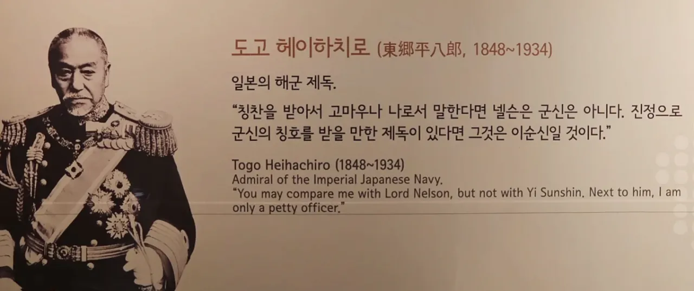
1.도고 헤이하치로가 이순신을 찬양했다?
러일 전쟁을 승리로 이끈 일본 해군의 제독 도고 헤이하치로,
러일 전쟁의 승리를 축하하는 만찬장에서
그에게 아부하는 자가 그를 넬슨에 빗대며 추켜세우자 도고는
"넬슨은 그 정도의 인물이 아니다. 진정으로 군신이라 불릴만한 사람은 이순신일 것이다"
라며 겸손하게 이순신을 추켜세웠다는 이야기
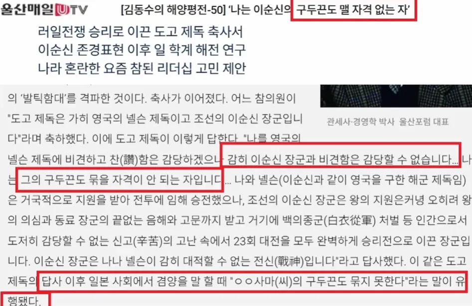
이 이야기는 한국에서 장소와 발언 내용이 여러가지 바리에이션으로
아무튼 도고 헤이하치로가 이순신을 찬양했다는 식으로 퍼져있다.
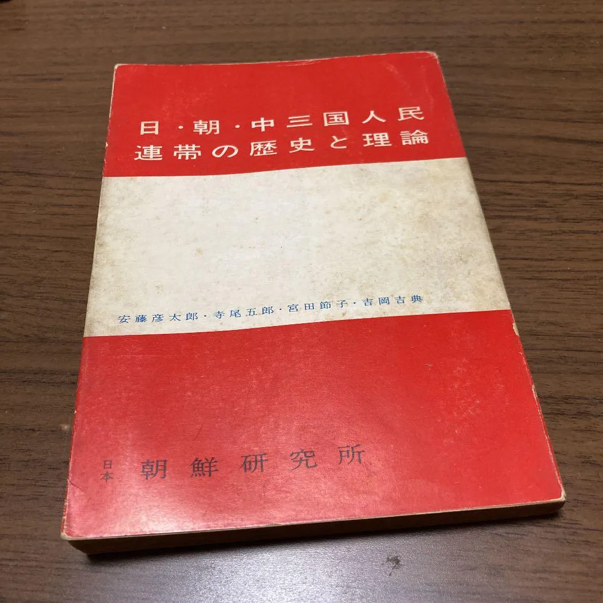
이 일화가 널리 알려지게 된 계기로 1965년에 출간된 이 책을 들 수 있는데
제목을 보면 알겠지만 이 책은 일본,조선(북한),중국 인민들의 연대를 선전하기 위해
일본 좌익들에 의해 쓰인 책으로 해당 서적에서는 그 일화에 대한 어떤 출처도 제시하지 않고 있다
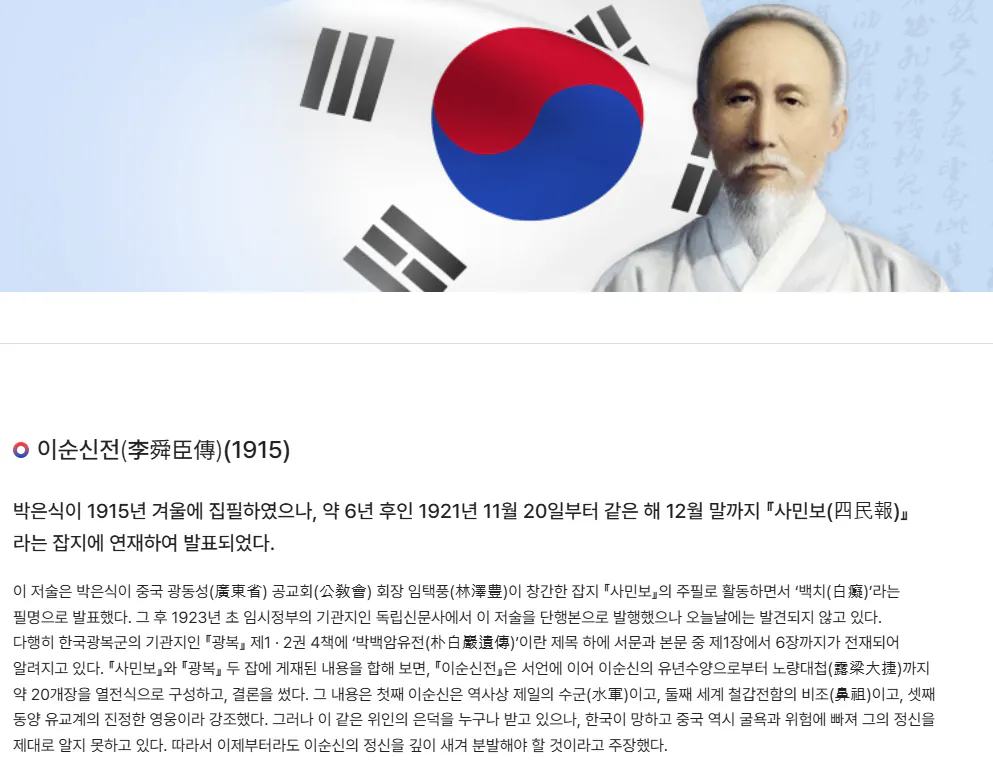
이 일화의 출발은 임정요인이자 민족주의 사학자 박은식이 쓴 이순신전인데
여기서 박은식은 도고가 이순신을 닮고자 한다는 일화를 쓰고 있다.
이 역시 당대에 떠돌던 서양의 넬슨, 동양의 도고라는 인식에 박은식이
민족주의적인 시각을 붙여 만들어낸 일화이다.
이것이 세월이 흐르면서 여러 언론에 의해 점점 살이 붙고 다듬어져
현재 우리가 알고 있는 그 일화의 형태를 갖추게 되었다.
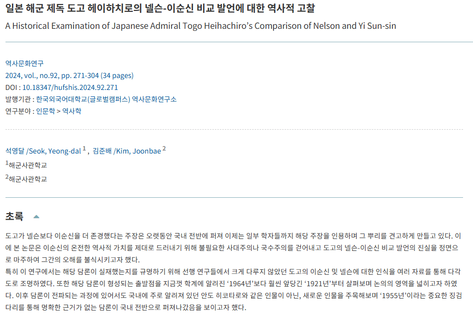
도고가 개인적으로 이순신을 어떻게 생각했는지,
실제로 존경했는지는 알 수 없지만
이 일화는 결코 사실이 아니다
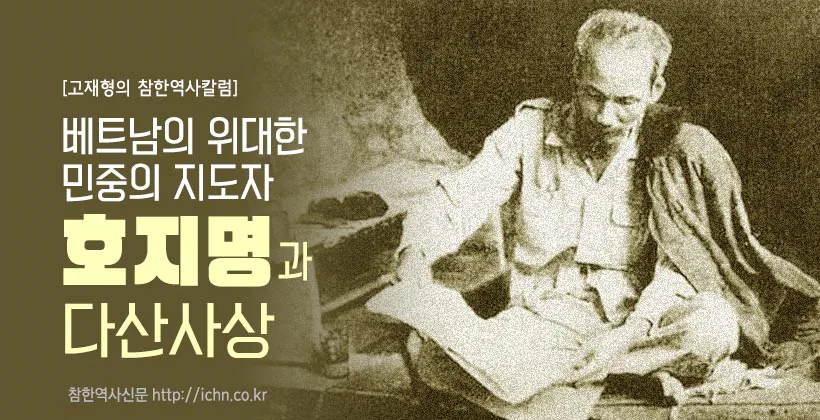
2.호치민은 목민심서를 평생 품에 안고 살았다?
정약용이 쓴 목민심서를 베트남의 국부 호치민이 평생의 지침서로 삼아
잘 때조차 머리 맡에 두고 정약용의 제사까지 지냈다는 이야기 또한 유명하다
무려 대통령씩이나 되는 사람이 한국 베트남 교류행사 축전에서 언급할 정도로 유명한 일화인데
대충 이 일화에 따르면 모스크바에서 호치민을 만난 박헌영은
그에게 목민심서를 선물했고 이 책에 호치민은
전쟁터에서조차 그 책을 들고다닐 정도로 큰 감명을 받았다는 이야기
그러나 이는 명백한 거짓이며 호치민은 목민심서 근처에 가본 적도 없다
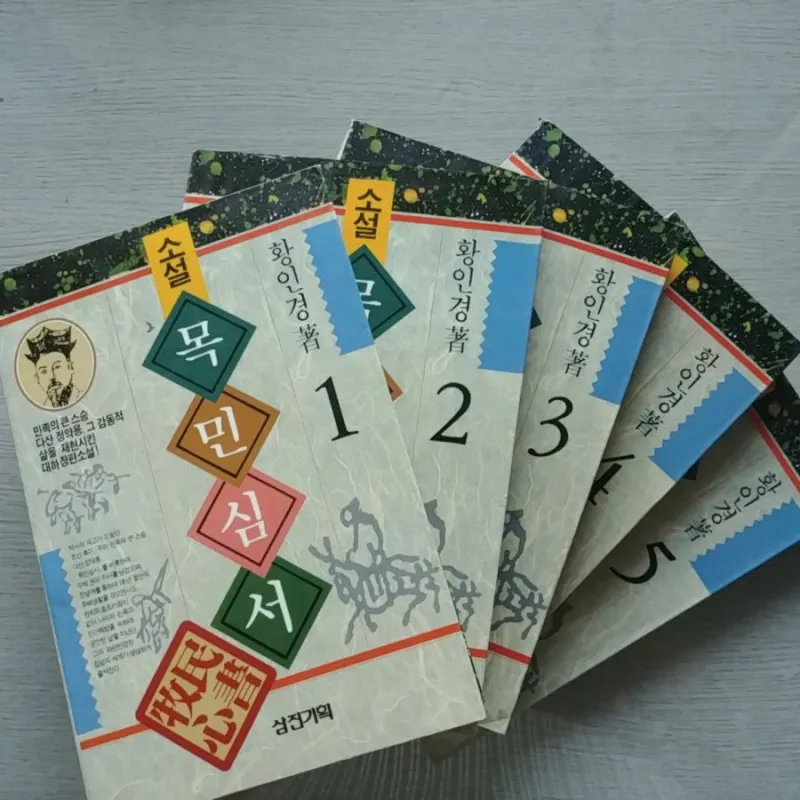
목민심서가 호치민 곁에 있었다는 주장은
90년대초 한국과 베트남의 화해 분위기 속 대중문화에서 자라났다
92년엔 소설 목민심서나 나의문화유산답사기 같은 베스트셀러에서 호치민이 애독했다거나
고은 같은 시인도 그의 시집에서 그런 설을 인용했다
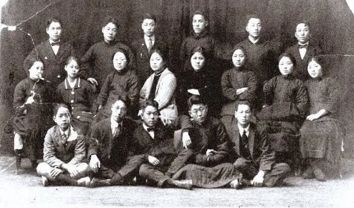
2009년에 나온 박헌영 평전에선 이 주장을 뒷받침하기 위해
박헌영이 모스크바에서 호치민을 만나 그에게 목민심서를 선물했다 라는
일화를 소개하기도 했다.
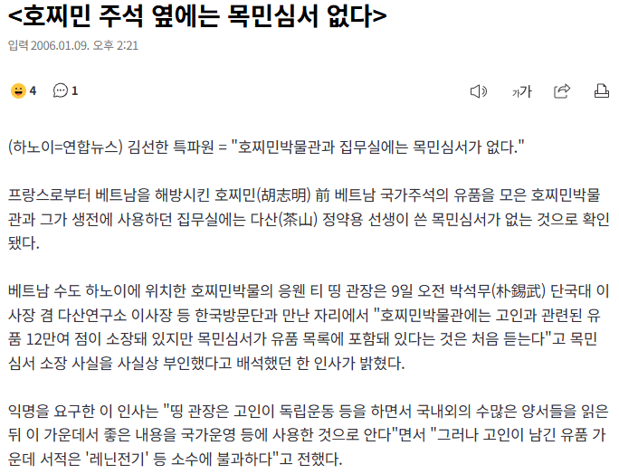
그러나 2006년에 이미 연합뉴스에서 호치민 박물관에 목민심서가 없음을 확인했고
박헌영 평전에서 주장한 내용은 애초에 박헌영과 호치민의 시기적인 동선이 전혀 맞지않고
그를 뒷받침하는 사료 역시 존재하지 않는다.
또한 목민심서는 한 두권으로 이루어진 책이 아니라 16권에 이르는 책으로
그걸 전쟁터에 바리바리 싸들고 다녔다는 주장 역시 넌센스이다.
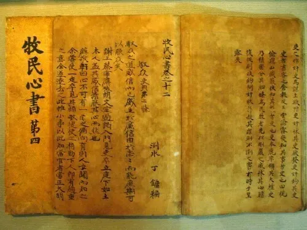
사실 목민심서는 공산주의자들이 읽을만한 책은 아니다.
아니 그런 빨갱이들이 아니더라도 애초에 현대 정치인들에게
목민심서는 그다지 권장할만한 책이 될 수 없다.
목민심서를 찬양하는 이들은 그 책의 내용 중 관리는 청렴해야하며 백성을 사랑해야한다 라는
정약용의 애민정신을 강조하는데 당시 조선의 사회상에서 정약용의 사상은
매우 진보적이고 그 윤리적인 문장들 자체만 놓고 보면 본받을 수 있을지 모른다.
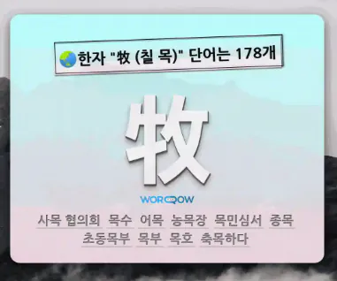
그러나 목민심서의 목은 목축과 같이 가축을 칠 때 쓰는 칠 목(牧)자로
결국 백성을 가축과 같이 위정자들이 돌보고 지도해야 할 대상으로 보는 책이다
빨갱이들의 표현을 빌리자면 꽤나 봉건적인 세계관에 기반한 책으로
현대의 정치인들은 국민이 권력을 위임한 종이자 공복이라는 자각을 가져야함에
백성을 돌보고 계도해야할 대상으로 보는 목민심서의 기반과는 맞지 않다.
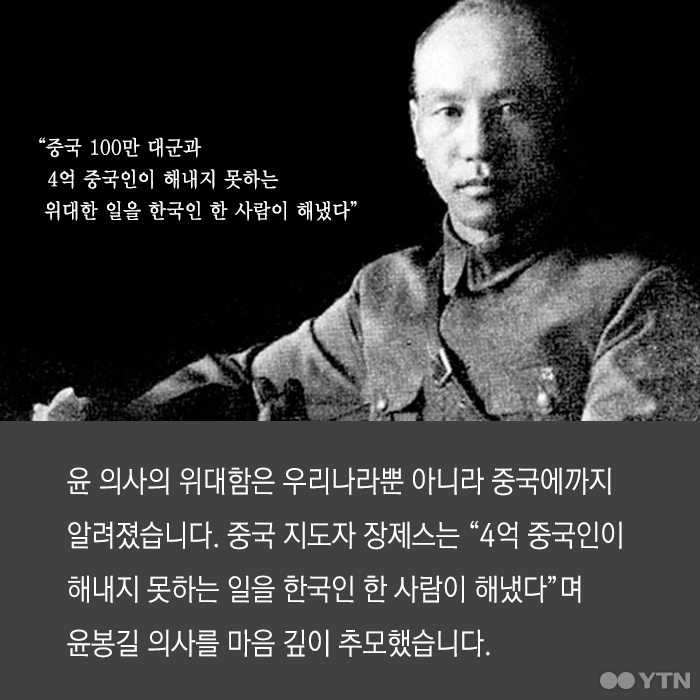
3.장제스가 윤봉길 의거를 찬양했다?
홍커우 공원 의거 후 국민당을 이끄는 장제스가 윤봉길의 의거에 감명받아
임시정부를 지원하기 시작했다는 것 역사적인 와전이다.
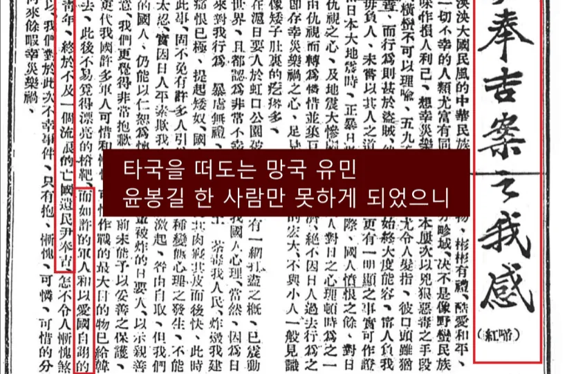
이 루머는 홍커우 공원 의거 후 당시 상해의 한 신문사 칼럼에서 출발한다.
'수많은 군인들과 애국자임을 자처하는 그 많은 혁명 청년들도 결국에는 타국을 떠도는 망국 유민 윤봉길 한 사람만 못하게 되었으니' 라고 평한 칼럼의 문장이
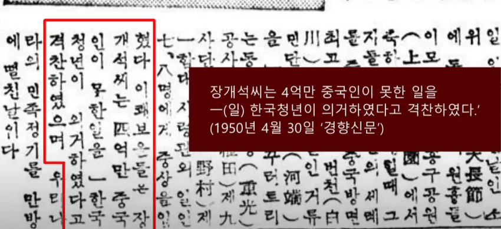
시간이 흘러 1950년에 장제스가 한 말로 둔갑하더니
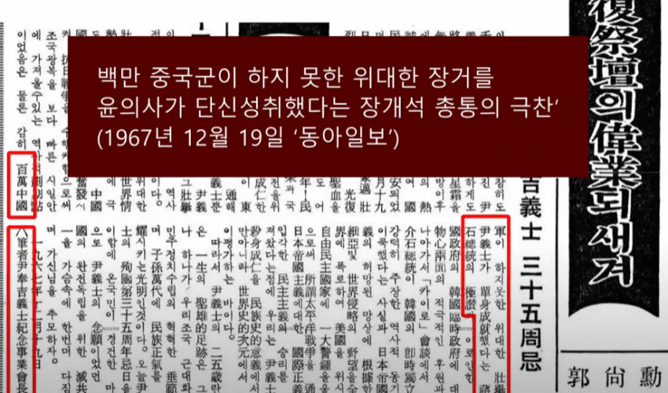
1967년 윤봉길 의거 기념 사업회에 의해 4억 중국인-> 백만 중국군이라 바뀌고
사실이라 확정지어 지면서 지금까지도 한국에선 장개석이 저런 말을 했다고 믿고 있다.
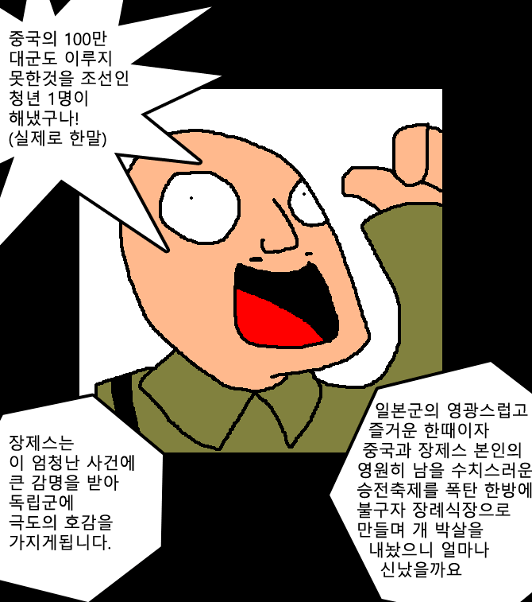
애초에 당시 장제스가 윤봉길 의거에 감명을 받았다는 주장은 근거가 없다.
당시 중국은 일본과 정전 협정 조인을 앞두고 있었고 이를 통해 일본의 침략에 맞설 시간을 벌고자 했다.
그러나 홍커우 공원 사건으로 협정 조인식이 무산될 위기에 처하자
국민당 정부는 노심초사하며 곧바로 해당 사건과 선을 긋는 행보를 보였다.
사실 통쾌해 한 건 언론과 일반 시민들이었다.
당시 국민당 정부는 불리한 전황과 상황에서 일본에 많은 것을 내주는 협상을 할 수 밖에 없었는데
이로 인해 분노한 상하이 학생들에게 중국측 협상 대표인 궈타이치가 구타당해
양측 협상 대표는 병원 침대에 누워 협상을 진행하는 기괴한 풍경 속에 치뤄질 정도였다.
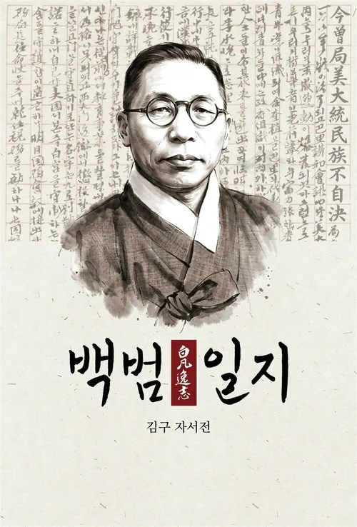
백범일지에는 홍커우 의거 1년 후 김구가 장제스를 만나서 지원을 논의한 회고가 나오는데
국민당이 임시정부를 지원해주면 일본,만주,중국에서 무장 테러와 폭동을 일으키겠다는
김구의 제안에 장개석은 '천황 하나를 죽이면 또 다른 천황이 나오고 대장 하나를 죽이면 또 다른 대장이 나올 뿐이다 장래의 독립을 도모하자면 무관을 양성해야하지 않겠는가' 라며 장기적인 군사 육성을 하라 제안했다.
이것엔 김구의 테러 활동보단 임정의 인력을 장제스 휘하에 두어 통제하고
장기적인 전력으로 쓰겠다는 장제스의 정치적 계산이 깔려있었다.
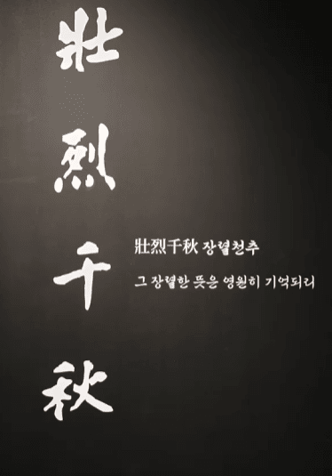
물론 그 후 장제스는 윤봉길의 의거를 기념하는 장렬천추라는 휘호를 보내주기도 했다.
그러나 이는 1960년대말에 윤봉길 기념관의 요청으로 장제스가 우편으로 보내준 휘호이며
똑같은 휘호를 장제스는 안중근 기념관에도 보내줬다
30년이 지난 시점에선 장제스가 윤봉길의 의거를 통쾌했다라고 생각했을지 모르지만
사건 당시에 장제스의 입장을 고려하면 이는 근거가 매우 빈약한 이야기이다.
아 그리고 백범일지 이야기가 나와서 말인데
4.김구 선ㅅ...아니 이광수 선생님 보고 계십니까...?
우린 흔히 21세기에 정말로 문화 강국이 된 대한민국을 빗대며
김구 선생님 보고 계십니까? 라는 농담을 하곤 한다.
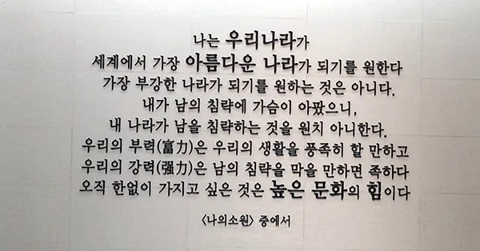
유려한 문장으로 쓰인 백범일지의 나의 소원에서
김구 본인의 꿈은 한민족의 국가가 군사 강국이 아닌
문화 강국이 되는 것을 바란다고 쓰고 있다.
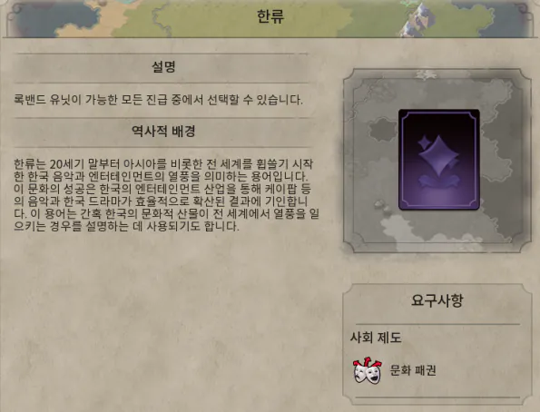
식민지배와 전쟁의 참화에서 일어난지 100년도 안된 대한민국이
전세계의 문화를 선도하는 문화 강국이 됐다는 건
정말로 김구의 꿈이 이루어졌다고 생각할 수 있을 것이다.
그러나 안타깝게도(?) 이는 김구의 꿈이 아니다.
이것은 백범일지를 윤문한 저 유명한 대문호 춘원 이광수의 꿈이다.
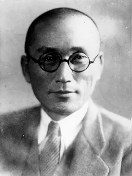
춘원 이광수는 위대한 작품들을 집필한 대문호이지만
동시에 친일파로 변절해 일제에 적극 협력했다는 비판도 받는다
그는 그런 그의 행적을 참회 또는 세탁 하기 위해 김구에게 백범일지 윤문을 제안했고
김구는 그가 껄끄러웠지만 속죄하게 하겠다는 의도에서 이광수의 제안을 받아들였다.
그렇게 우리가 아는 백범일지의 아름다운 문장들은 이광수의 손에 탄생했던 것이다.
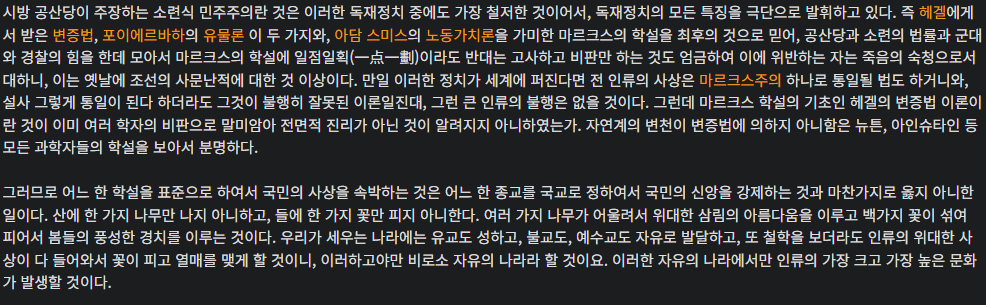
나의 소원에서 우리는 '내가 원하는 우리나라' 부분은 줄줄히 꿰고 있지만
사실 그 전문을 알고 있는 사람은 꽤 드물다.
나의 소원에서 밝히고 있는 정치 이념 부분에선 꽤나 어려운 철학 용어들이 줄줄히 등장한다.
이는 전형적인 이광수식 글쓰기로
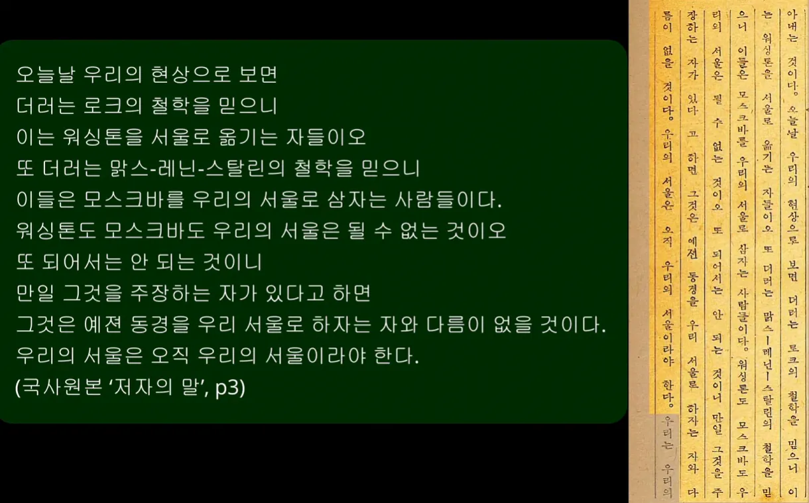
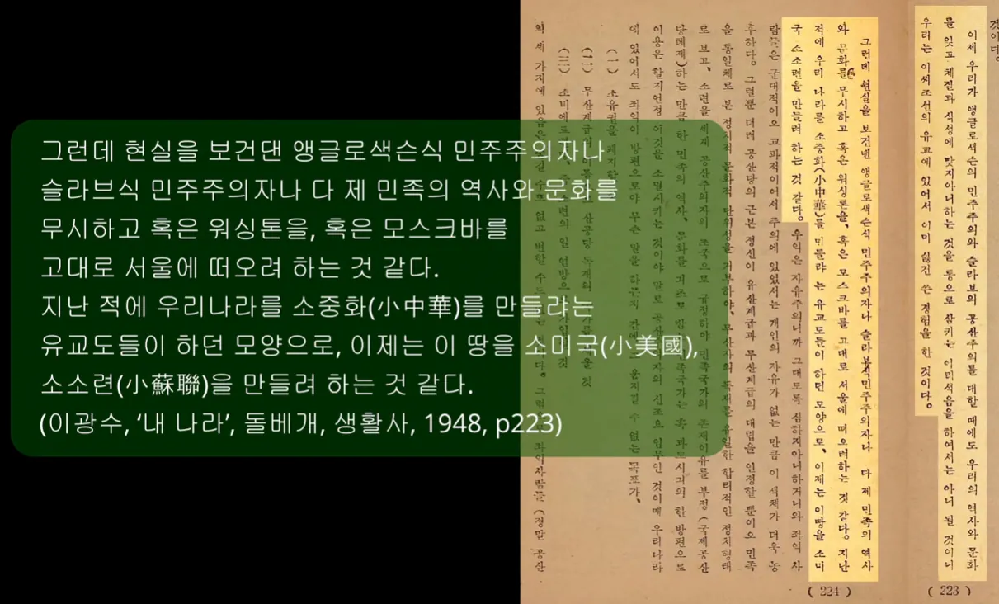
백범일지와 백범일지 집필 1년 후 이광수가 쓴 수필집 양쪽에선 똑같은 내용이 그대로 등장한다.
이 정도의 지적 내공은 당대에 이광수급의 지식인들이나 가능했고
김구가 직접 쓴 친필 원본과 이광수가 윤문한 국사원본의 내용은
하늘과 땅급으로 그 내용과 문체가 다르다.
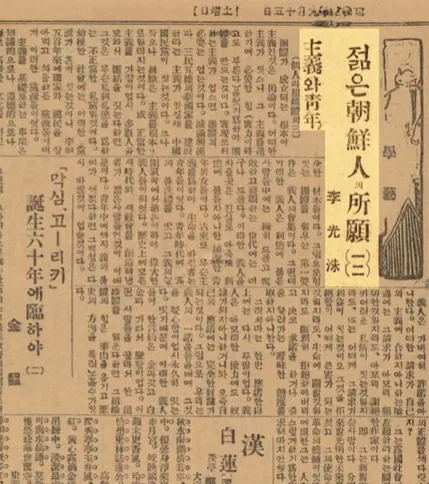
1928년 이광수는 조선일보에 젊은 조선인의 소원이라는 논설을 연재했다.
이 논설에서 이광수는 '주의를 기초로 하는 사업은 지식적으로나 도덕적으로나 훨씬 고급한 문화를 가진 백성이라야 할 수 있다' 라고 쓰고 있다.
이렇듯 문화는 이광수의 일관된 주장이었다.
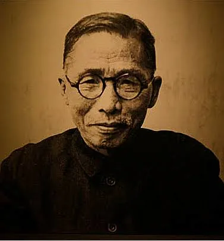
김구는 애초에 행동주의자였지 근대 고등교육을 받은 엘리트형 인물은 아니었다.
그는 헤겔의 변증법이나 포이에르바하의 유물론 같은 높은 수준의 서양 철학을 배운 적이 없었다.
김구의 행적을 따라가보면 그는 문자 그대로의 군사 강국을 원했지 문화 강국과는 거리가 먼 사람이었다.
나의 소원이 김구의 승인을 받았다 하더라도 결국 그 뼈대와 사상적 표현을 설계한 인물은 이광수였다.
문화 강국은 김구의 입을 빌어 나온 이광수의 소원이었다.
마지막으로 서두에 쓴 역사를 잊은 민족은
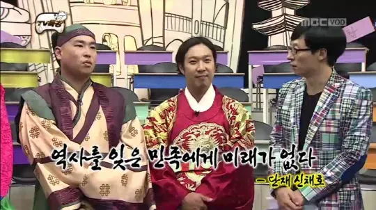
5.역사를 자기 좋을대로 기억하는 민족에게 미래는 없다
사실 이제는 이 문구가 실체가 없는 말이란게 많이 알려졌지만 어쨌든
이 헛소리의 출발은 2010년대 MBC 예능 무한도전에서 출발한다
그러나 신채호가 쓴 그 어떠한 저서에도 그런 문장은 존재하지 않는다.
근데 무한도전팀은 이를 알고 있었다.
그래서 해당 방송 3년 후 무한도전 팀은
이 인용구를 슬그머니 윈스턴 처칠의 말로 바꿔놨다.
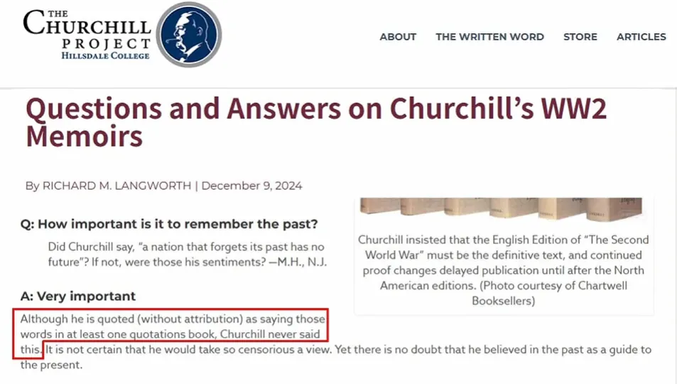
그러나 이조차도 틀린 인용으로 미국의 힐스데일 컬리지의
처칠 프로젝트 연구자는 처칠은 결코 이 말을 한 적이 없다고 한다.
이렇게까지 말하는거 보면 서양에서도 이게 꽤나 잘못 알려진 인용구로 유명한가보다.
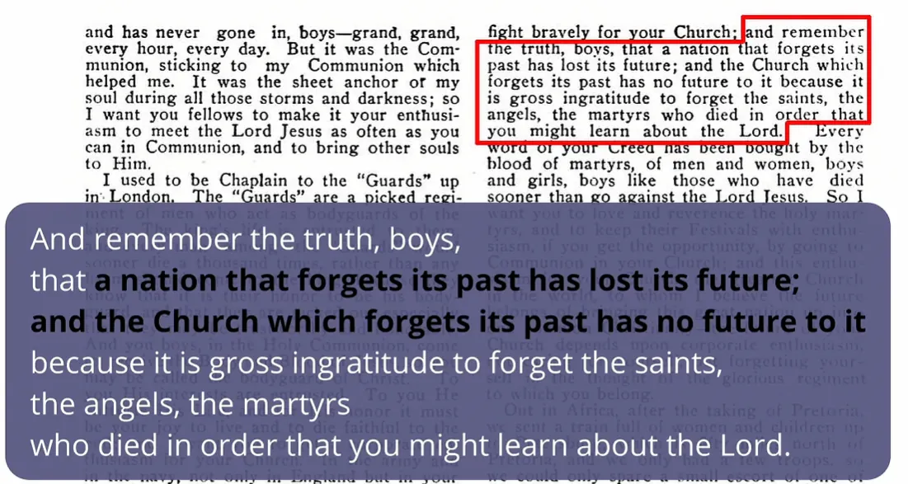
그나마 확인할 수 있는 문서 중 가장 오래된 건 1909년 미국의 성 안드레아 성공회 기관지에 등장하는데
'과거를 잊은 민족은 미래를 잃은 것이며, 과거를 잊은 교회에 미래는 없다' 정도의 문장이다.
이상하다고 여기긴해도 팩트체크까진 안해봤는데 ㅋㅋ
잘읽고갑니다